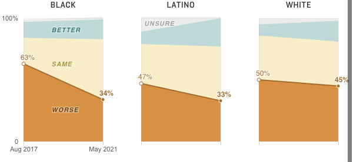

<% if (COPY.labels.race_responses) { %>
<%= t.smarty(COPY.labels.race_responses) %>
<% } %>

<% if (COPY.labels.party_responses) { %>
<%= t.smarty(COPY.labels.party_responses) %>
<% } %>
<% if (COPY.labels.screenreader) { %>
aria-label="<%- COPY.labels.screenreader %>"
<% } %>